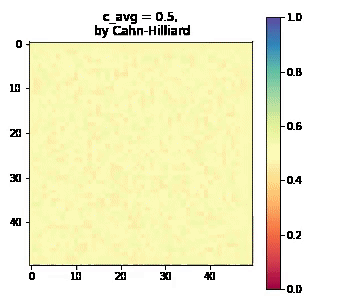

High Strain-rate deformation behavior of cross-linked epoxy using MD
In this work, a Molecular Dynamics(MD) framework was developed to understand the deformation behavior of a well known Fiber Reinforced Polymer(FRP) composite that has applications both in navy and aerospace.
Made use of class 2 force fields to create the atomistic models of epoxy and amine monomers.
Mimicked the multistep organic reaction to create the epoxy network. This was done by creating reactive sites on monomer molecules and simplifying it to a one step reaction.
Mechanical behavior of the epoxy network thus formed, was studied under uniaxial and biaxial loading conditions.
Skills used: LAMMPs, Python, Bash Scripting on HPC cluster
The animation on the left shows the uniaxial deformation of an epoxy network done using LAMMPs More
Investigating the wrinkling of atomic planes in metal nanowires using MD
Unlike the bulk solid case, as we move into smaller and smaller regimes such as nanowires and nanorods, the majority of the atoms lie on the surface, so surface effects become significant and their effects cannot be ignored. The coordination number of the surface atoms is lower than those in the bulk. So they tend to adopt spacings that are different from the bulk. They do this in order to obtain minimum energy configuration. This spacing mismatch between bulk and the surface atoms leads to development of surface stresses. These surface stresses are compensated by generation of stresses which are felt within the bulk of the solid.
Here we use Molecular dynamics to explore one such interesting effect of surface stress on the structure of ultra-thin metallic nanowires where the flat close packed (111) planes normal to the axis of the nanowire undergo wrinkling to form saddle shaped surfaces.
Skills used: LAMMPs, Python
The figure on the left shows the wrinkling of a (111) surface of a gold nanowire in a hexagonal fashion
Chladni patterns of a vibrating square plate computed using numerical methods
In his famous experiment in 1787, a German physicist named Ernst Chladni sprinkled fine sand particles on a square plate before setting it to vibration using using a violin bow. As the plate vibrates, the sand gathers at the stationary points creating intricate patterns. These patterns are studied to determine natural frequencies of the vibrating plate.
For this specific problem where we have a square plate with free boundary condition, such nodal patterns happen to be the zero sets of the eigenfunctions of a bi-harmonic oscillator. In this work we understand how the mathematical model of the eigenvalue problem is arrived at, discretized and calculated.
Skills used: MATLAB
The figure on the left shows some Chladni Patterns of a vibrating square plate computed using MATLAB More Youtube
Phase field simulations using the Allen-Cahn and Cahn-Hilliard equations

Phase field equations are mathematical models that are used to simulate the behavior of systems that involve multiple phases, such as solidification. These equations describe the evolution of a phase field variable, which usually ranges from 0 to 1, with 0 representing one phase, and 1 representing the other.
The Allen-Cahn equation describes the dynamics of a scalar field that represents the order parameter, which is a measure of the deviation of the system from a state of equal concentrations of the two phases. Whereas the Cahn-Hilliard equation describes the dynamics of the order parameter, its gradient and a parameter that represents the chemical potential of the system.
In this project, both the Allen-Cahn and Cahn-Hilliard equations are solved for different starting compositions of a particular system. It involved discretizing the domain of interest first, and then approximating the derivatives using finite differences. The solution is obtained by iteratively updating the phase field variable at each time step.
Skills used: Python
The animation on the left shows how the Cahn-Hilliard equation captures the evolution of a lamellar microstructure resulting from spinodal decomposition
More
2D wave equation for a square plate solved using finite difference method
In this project, the 2D wave equation for a square plate is solved numerically using MATLAB. This was done using the method of finite difference. The basic idea of the method is to first discretize the domain of interest into a grid of points and then approximate the partial derivatives in the wave equation using finite differences. After that a time stepping scheme is used to update the values of the wave function at each grid point at each time step.
Skills used: MATLAB
The figure on the left shows a numerical solution of the wave function at a given timestep More
This project involved the use of Autodesk Alias, a software tool for industrial design to create a design for a “smart bottle”. The design process involved drawing sketches, clay modeling, 3D scanning, prototyping using Alias and then 3D printing the final product.
Community detection in graphs is the process of identifying groups of nodes in a graph that are more closely connected to each other than to the rest of the graph. Some common methods to identify communities in a graph are:
Spectral method: This method involves analyzing the eigenvectors of the graph’s Laplacian matrix to identify communities.
Louvain method: It is a greedy optimization method that aims to maximize modularity, a measure of the density of edges within a community compared to density of edges between communities. It starts out by treating each node as a community and then iteratively combines communities by moving nodes from one community to another such that modularity is maximized after each move.
In this work, both these methods are employed to detect two dolphin communities from their undirected social network graph and the results are compared.
Skills Used: Python, NetworkX
The figure on the left shows nodes of the dolphin social network colored according to the particular community they belong to. This solution was arrived at by Louvain’s method.
More